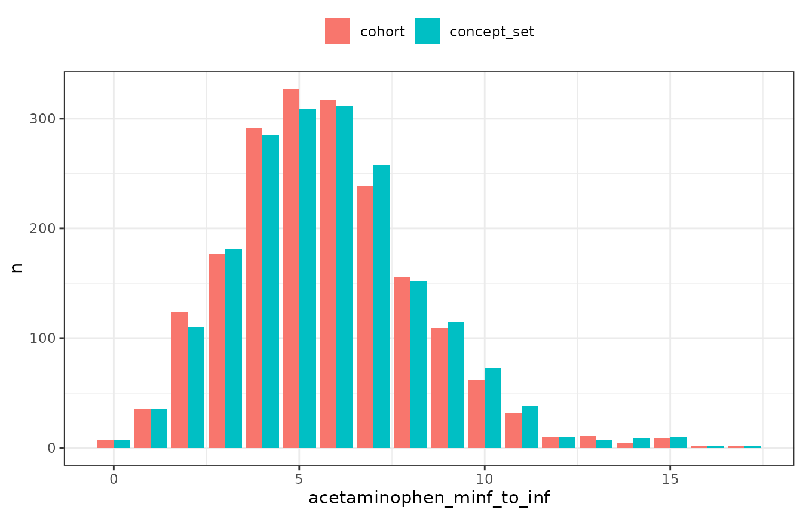

Adding concept intersections
Source:vignettes/a03_addingConceptIntersections.Rmd
a03_addingConceptIntersections.RmdIntroduction
Concept sets play an important role when working with data in the format of the OMOP CDM. They can be used to create cohorts after which, as we’ve seen in the previous vignette, we can identify intersections between the cohorts. PatientProfiles adds another option for working with concept sets which is use them for adding associated variables directly without first having to create a cohort.
It is important to note, and is explained more below, that results may differ when generating a cohort and then identifying intersections between two cohorts compared to working directly with concept sets. The creation of cohorts will involve the collapsing of overlapping records as well as imposing certain requirements such as only including records that were observed during an individuals observation period. When adding variables based on concept sets we will be working directly with record-level data in the OMOP CDM clinical tables.
Adding variables from concept sets
For this vignette we’ll use the Eunomia synthetic dataset. First lets create our cohort of interest, individuals with an ankle sprain.
library(CDMConnector)
library(CodelistGenerator)
library(PatientProfiles)
library(dplyr)
#>
#> Attaching package: 'dplyr'
#> The following objects are masked from 'package:stats':
#>
#> filter, lag
#> The following objects are masked from 'package:base':
#>
#> intersect, setdiff, setequal, union
library(ggplot2)
con <- DBI::dbConnect(duckdb::duckdb(),
dbdir = CDMConnector::eunomia_dir())
#> Creating CDM database /tmp/RtmpACF6mp/GiBleed_5.3.zip
cdm <- CDMConnector::cdm_from_con(con,
cdm_schem = "main",
write_schema = "main")
cdm <- generateConceptCohortSet(
cdm = cdm,
name = "ankle_sprain",
conceptSet = list("ankle_sprain" = 81151),
end = "event_end_date",
limit = "all",
overwrite = TRUE
)
cdm$ankle_sprain
#> # Source: table<ankle_sprain> [?? x 4]
#> # Database: DuckDB v0.10.0 [unknown@Linux 6.5.0-1016-azure:R 4.3.3//tmp/RtmpACF6mp/file20b22d96160c.duckdb]
#> cohort_definition_id subject_id cohort_start_date cohort_end_date
#> <int> <int> <date> <date>
#> 1 1 1 1970-12-03 1970-12-31
#> 2 1 334 1937-07-24 1937-08-28
#> 3 1 384 1962-04-20 1962-05-25
#> 4 1 549 1977-03-12 1977-04-16
#> 5 1 842 1992-02-02 1992-03-01
#> 6 1 1054 1973-04-29 1973-05-13
#> 7 1 1112 1971-03-03 1971-04-07
#> 8 1 1116 1993-03-23 1993-04-06
#> 9 1 1431 2003-02-16 2003-03-02
#> 10 1 1535 1999-09-10 1999-10-01
#> # ℹ more rowsNow let’s say we’re interested in summarising use of acetaminophen among our ankle sprain cohort. We can start by identifying the relevant concepts.
acetaminophen_cs <- getDrugIngredientCodes(cdm = cdm,
name = c("acetaminophen"))
acetaminophen_cs
#>
#> ── 1 codelist ──────────────────────────────────────────────────────────────────
#>
#> - acetaminophen (7 codes)Once we have our codes for acetaminophen we can create variables based on these. As with cohort intersections, PatientProfiles provides four types of functions for concept intersections.
First, we can add a binary flag variable indicating whether an individual had a record of acetaminophen on the day of their ankle sprain or up to 30 days afterwards.
cdm$ankle_sprain %>%
addConceptIntersectFlag(conceptSet = acetaminophen_cs,
indexDate = "cohort_start_date",
window = c(0, 30)) %>%
dplyr::glimpse()
#> Rows: ??
#> Columns: 5
#> Database: DuckDB v0.10.0 [unknown@Linux 6.5.0-1016-azure:R 4.3.3//tmp/RtmpACF6mp/file20b22d96160c.duckdb]
#> $ cohort_definition_id <int> 1, 1, 1, 1, 1, 1, 1, 1, 1, 1, 1, 1, 1, 1, 1, 1, …
#> $ subject_id <int> 1431, 2679, 2992, 685, 1057, 1950, 4125, 4459, 5…
#> $ cohort_start_date <date> 2003-02-16, 1982-11-09, 1971-10-30, 1977-07-09,…
#> $ cohort_end_date <date> 2003-03-02, 1982-12-07, 1971-11-20, 1977-07-30,…
#> $ acetaminophen_0_to_30 <dbl> 1, 1, 1, 1, 1, 1, 1, 1, 1, 1, 1, 1, 1, 1, 1, 1, …Second, we can count the number of records of acetaminophen in this same window for each individual.
cdm$ankle_sprain %>%
addConceptIntersectCount(conceptSet = acetaminophen_cs,
indexDate = "cohort_start_date",
window = c(0, 30)) %>%
dplyr::glimpse()
#> Rows: ??
#> Columns: 5
#> Database: DuckDB v0.10.0 [unknown@Linux 6.5.0-1016-azure:R 4.3.3//tmp/RtmpACF6mp/file20b22d96160c.duckdb]
#> $ cohort_definition_id <int> 1, 1, 1, 1, 1, 1, 1, 1, 1, 1, 1, 1, 1, 1, 1, 1, …
#> $ subject_id <int> 1431, 2679, 2992, 685, 1057, 1950, 4125, 4459, 5…
#> $ cohort_start_date <date> 2003-02-16, 1982-11-09, 1971-10-30, 1977-07-09,…
#> $ cohort_end_date <date> 2003-03-02, 1982-12-07, 1971-11-20, 1977-07-30,…
#> $ acetaminophen_0_to_30 <dbl> 1, 1, 1, 1, 1, 1, 1, 1, 1, 1, 1, 1, 1, 1, 1, 1, …Third, we could identify the first start date of acetaminophen in this window.
cdm$ankle_sprain %>%
addConceptIntersectDate(conceptSet = acetaminophen_cs,
indexDate = "cohort_start_date",
window = c(0, 30),
order = "first") %>%
dplyr::glimpse()
#> Rows: ??
#> Columns: 5
#> Database: DuckDB v0.10.0 [unknown@Linux 6.5.0-1016-azure:R 4.3.3//tmp/RtmpACF6mp/file20b22d96160c.duckdb]
#> $ cohort_definition_id <int> 1, 1, 1, 1, 1, 1, 1, 1, 1, 1, 1, 1, 1, 1, 1, 1, …
#> $ subject_id <int> 549, 842, 1112, 1431, 2679, 2992, 3410, 685, 105…
#> $ cohort_start_date <date> 1977-03-12, 1992-02-02, 1971-03-03, 2003-02-16,…
#> $ cohort_end_date <date> 1977-04-16, 1992-03-01, 1971-04-07, 2003-03-02,…
#> $ acetaminophen_0_to_30 <date> 1977-03-12, 1992-02-02, 1971-03-03, 2003-02-16,…Or fourth, we can get the number of days to the start date of acetaminophen in the window.
cdm$ankle_sprain %>%
addConceptIntersectDays(conceptSet = acetaminophen_cs,
indexDate = "cohort_start_date",
window = c(0, 30),
order = "first") %>%
dplyr::glimpse()
#> Rows: ??
#> Columns: 5
#> Database: DuckDB v0.10.0 [unknown@Linux 6.5.0-1016-azure:R 4.3.3//tmp/RtmpACF6mp/file20b22d96160c.duckdb]
#> $ cohort_definition_id <int> 1, 1, 1, 1, 1, 1, 1, 1, 1, 1, 1, 1, 1, 1, 1, 1, …
#> $ subject_id <int> 549, 842, 1112, 1431, 2679, 2992, 3410, 685, 105…
#> $ cohort_start_date <date> 1977-03-12, 1992-02-02, 1971-03-03, 2003-02-16,…
#> $ cohort_end_date <date> 1977-04-16, 1992-03-01, 1971-04-07, 2003-03-02,…
#> $ acetaminophen_0_to_30 <dbl> 0, 0, 0, 0, 0, 0, 0, 0, 0, 0, 0, 0, 0, 0, 0, 0, …Adding multiple concept based variables
We can add more than one variable at a time when using these functions. For example, we might want to add variables for multiple time windows.
cdm$ankle_sprain %>%
addConceptIntersectFlag(conceptSet = acetaminophen_cs,
indexDate = "cohort_start_date",
window = list(c(-Inf, -1),
c(0, 0),
c(1, Inf))) %>%
dplyr::glimpse()
#> Rows: ??
#> Columns: 7
#> Database: DuckDB v0.10.0 [unknown@Linux 6.5.0-1016-azure:R 4.3.3//tmp/RtmpACF6mp/file20b22d96160c.duckdb]
#> $ cohort_definition_id <int> 1, 1, 1, 1, 1, 1, 1, 1, 1, 1, 1, 1, 1, 1, 1, …
#> $ subject_id <int> 334, 1054, 1112, 1431, 1535, 2359, 2541, 2679…
#> $ cohort_start_date <date> 1937-07-24, 1973-04-29, 1971-03-03, 2003-02-…
#> $ cohort_end_date <date> 1937-08-28, 1973-05-13, 1971-04-07, 2003-03-…
#> $ acetaminophen_minf_to_m1 <dbl> 0, 1, 0, 1, 1, 1, 1, 1, 1, 1, 1, 1, 1, 0, 1, …
#> $ acetaminophen_1_to_inf <dbl> 1, 1, 1, 1, 0, 0, 1, 1, 1, 1, 1, 0, 0, 1, 1, …
#> $ acetaminophen_0_to_0 <dbl> 0, 0, 0, 0, 0, 0, 0, 0, 0, 0, 0, 0, 0, 0, 0, …Or we might want to get variables for multiple drug ingredients of interest.
meds_cs <- getDrugIngredientCodes(cdm = cdm,
name = c("acetaminophen",
"amoxicillin",
"aspirin",
"heparin",
"morphine",
"oxycodone",
"warfarin"))
cdm$ankle_sprain %>%
addConceptIntersectFlag(conceptSet = meds_cs,
indexDate = "cohort_start_date",
window = list(c(-Inf, -1),
c(0, 0))) %>%
dplyr::glimpse()
#> Rows: ??
#> Columns: 18
#> Database: DuckDB v0.10.0 [unknown@Linux 6.5.0-1016-azure:R 4.3.3//tmp/RtmpACF6mp/file20b22d96160c.duckdb]
#> $ cohort_definition_id <int> 1, 1, 1, 1, 1, 1, 1, 1, 1, 1, 1, 1, 1, 1, 1, …
#> $ subject_id <int> 334, 1054, 1112, 1431, 1535, 2359, 2541, 2679…
#> $ cohort_start_date <date> 1937-07-24, 1973-04-29, 1971-03-03, 2003-02-…
#> $ cohort_end_date <date> 1937-08-28, 1973-05-13, 1971-04-07, 2003-03-…
#> $ acetaminophen_minf_to_m1 <dbl> 0, 1, 0, 1, 1, 1, 1, 1, 1, 1, 1, 1, 1, 0, 1, …
#> $ aspirin_minf_to_m1 <dbl> 1, 1, 1, 1, 0, 0, 0, 0, 1, 1, 1, 1, 0, 1, 1, …
#> $ amoxicillin_minf_to_m1 <dbl> 0, 1, 0, 1, 1, 1, 0, 0, 1, 0, 0, 1, 1, 0, 1, …
#> $ oxycodone_minf_to_m1 <dbl> 0, 0, 0, 0, 0, 0, 0, 0, 0, 0, 0, 0, 0, 0, 0, …
#> $ heparin_minf_to_m1 <dbl> 0, 0, 0, 0, 0, 0, 0, 0, 0, 0, 0, 0, 0, 0, 0, …
#> $ morphine_minf_to_m1 <dbl> 0, 0, 0, 0, 0, 0, 0, 0, 0, 0, 0, 0, 0, 0, 0, …
#> $ warfarin_minf_to_m1 <dbl> 0, 0, 0, 0, 0, 0, 0, 0, 0, 0, 0, 0, 0, 0, 0, …
#> $ morphine_0_to_0 <dbl> 0, 0, 0, 0, 0, 0, 0, 0, 0, 0, 0, 0, 0, 0, 0, …
#> $ aspirin_0_to_0 <dbl> 0, 0, 0, 0, 0, 0, 0, 0, 0, 0, 0, 0, 0, 0, 0, …
#> $ oxycodone_0_to_0 <dbl> 0, 0, 0, 0, 0, 0, 0, 0, 0, 0, 0, 0, 0, 0, 0, …
#> $ acetaminophen_0_to_0 <dbl> 0, 0, 0, 0, 0, 0, 0, 0, 0, 0, 0, 0, 0, 0, 0, …
#> $ warfarin_0_to_0 <dbl> 0, 0, 0, 0, 0, 0, 0, 0, 0, 0, 0, 0, 0, 0, 0, …
#> $ heparin_0_to_0 <dbl> 0, 0, 0, 0, 0, 0, 0, 0, 0, 0, 0, 0, 0, 0, 0, …
#> $ amoxicillin_0_to_0 <dbl> 0, 0, 0, 0, 0, 0, 0, 0, 0, 0, 0, 0, 0, 0, 0, …Cohort-based versus concept-based intersections
In the previous vignette we saw that we can add an intersection variable using a cohort we have created. Meanwhile in this vignette we see that we can instead create an intersection variable using a concept set directly. It is important to note that under some circumstances these two approaches can lead to different results.
When creating a cohort we combine overlapping records, as cohort
entries cannot overlap. Thus when adding an intersection count,
addCohortIntersectCount() will return a count of cohort
entries in the window of interest while
addConceptIntersectCount() will return a count of records
withing the window. We can see the impact for acetaminophen for our
example data below, where we have slightly more records than cohort
entries.
acetaminophen_cs <- getDrugIngredientCodes(cdm = cdm,
name = c("acetaminophen"))
cdm <- generateConceptCohortSet(
cdm = cdm,
name = "acetaminophen",
conceptSet = acetaminophen_cs,
end = "event_end_date",
limit = "all"
)
dplyr::bind_rows(
cdm$ankle_sprain |>
addCohortIntersectCount(targetCohortTable = "acetaminophen",
window = c(-Inf, Inf)) |>
dplyr::group_by(acetaminophen_minf_to_inf) |>
dplyr::tally() |>
dplyr::collect() |>
dplyr::arrange(desc(acetaminophen_minf_to_inf)) |>
dplyr::mutate(type = "cohort"),
cdm$ankle_sprain |>
addConceptIntersectCount(conceptSet = acetaminophen_cs,
window = c(-Inf, Inf)) |>
dplyr::group_by(acetaminophen_minf_to_inf) |>
dplyr::tally() |>
dplyr::collect() |>
dplyr::arrange(desc(acetaminophen_minf_to_inf)) |>
dplyr::mutate(type = "concept_set")) |>
ggplot() +
geom_col(aes(acetaminophen_minf_to_inf, n, fill = type),
position = "dodge") +
theme_bw()+
theme(legend.title = element_blank(),
legend.position = "top")
Additional differences between cohort and concept set intersections may also result from cohort table rules. For example, cohort tables will typically omit any records that occur outside an individual´s observation time (as defined in the observation period window). Such records, however, would not be excluded when adding a concept based intersection.